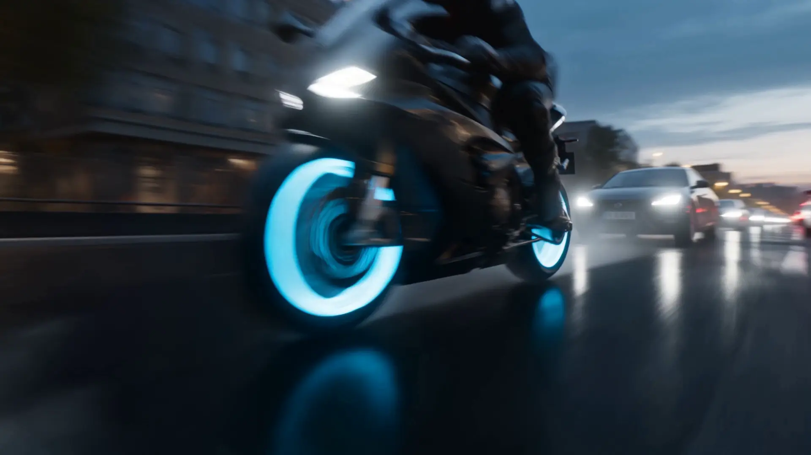
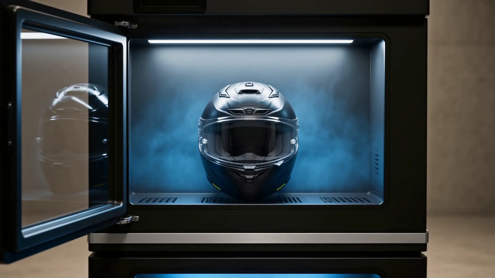
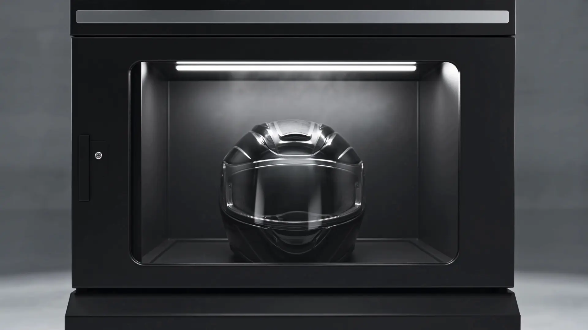

CASCANICS
La station de soin pour casques.
Chaque trajet laisse quelque chose derrière lui.
Sueur. Pollution. Bactéries.
L’intérieur de votre casque est plus contaminé qu’une lunette de toilettes.
Voici la réponse.
Cascanics. Le nettoyage professionnel, en libre-service.
Le constat
Un problème universel. Presque aucune solution accessible.
de porteurs de casques dans le monde — motards, cyclistes, skieurs, chantiers.
solution de nettoyage accessible au quotidien — jusqu’ici.
la durée d’un cycle complet, sans démontage.
Laver ses mousses à la main : 2 h, du démontage, et un risque d’abîmer le casque. Un cycle Cascanics : quelques minutes, automatique, sans contact avec l’eau.

Un cycle. Trois technologies.
01 — BRUME ACTIVE 360°
Une brume ultra-fine enveloppe l’intégralité du casque.
Mousses, sangles, moindres recoins. Elle décolle les résidus de sueur et neutralise les odeurs, sans une goutte d’eau.
02 — TRAITEMENT UV-C
Une lumière UV-C balaie l’intérieur du casque.
Elle cible les bactéries responsables des odeurs, là où elles se logent : au cœur des mousses.
03 — SÉCHAGE AIR MAÎTRISÉ
Un flux d’air tempéré sèche les mousses en profondeur.
Il fixe une fragrance légère, au choix. Le casque ressort sec, frais, prêt à enfiler.
Sans eau. Sans démontage. Sans risque pour votre casque.
Pour qui
Un service pour les motards. Un revenu pour les professionnels.
Motards & sportifs
Le réflexe d’après-ride.
- Casques moto et scooter
- Casques ski et snowboard
- Casques vélo et VTT
- Casques de chantier
Professionnels
Un service qui attire, fidélise et encaisse tout seul.
- Stations-service et aires d’autoroute
- Concessions et accessoiristes moto
- Loueurs et flottes de livraison
- Salles de sport, stations de ski, centres de contrôle technique

Conçue pour encaisser. Pensée pour durer.
Deux façons de démarrer
Exploitez votre machine, ou hébergez la nôtre.
Achat
J’achète ma machine
Pour les professionnels qui veulent l’exploitation complète. Investissement contenu, revenus dès la première semaine, ROI typique en quelques mois.
Demander le dossier & les prixDépôt
J’héberge une machine
Le modèle dépôt avec partage de revenus. Zéro investissement. Nous installons, vous encaissez votre part.
Vérifier l’éligibilité de mon siteContact